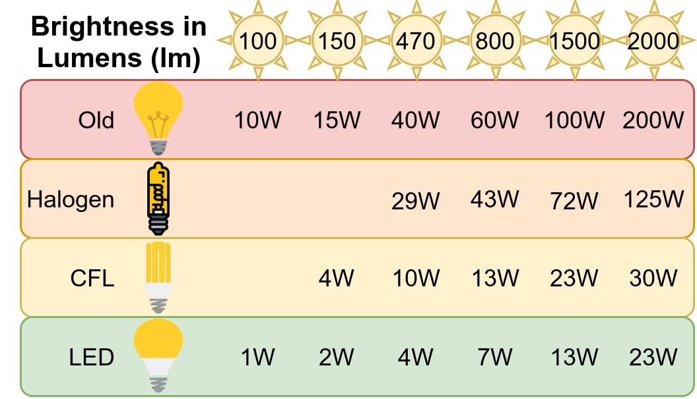
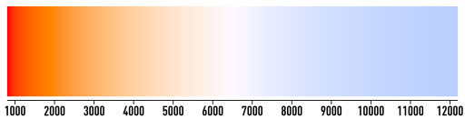
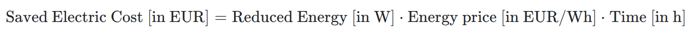
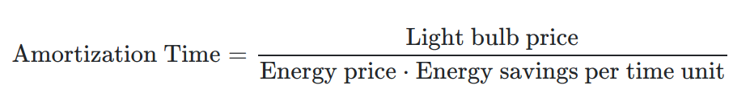
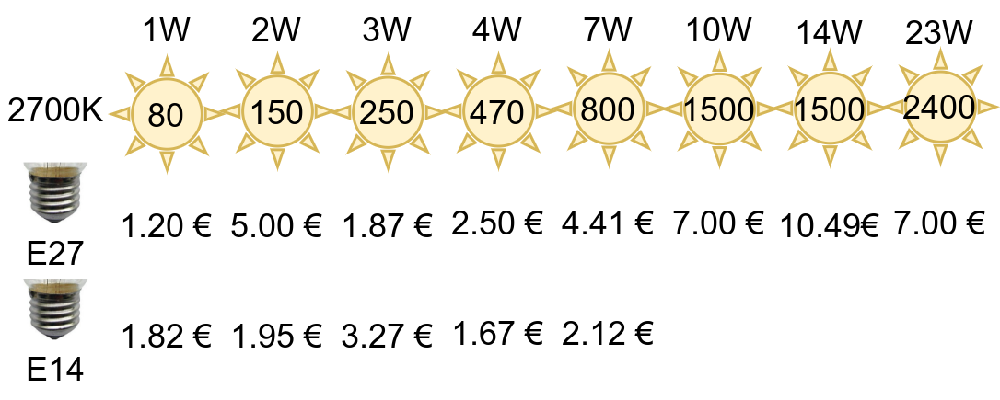
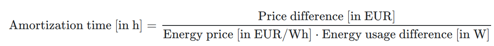

A rough estimation how much energy the four different types of lamps use to get a specific brightness. The old incandescent lamps are clearly the worst. Interestingly, LEDs get manufactured also for very low brightness lamps. This image was created by Martin Thoma. The light bulb images were created by Emoji One; Simon Eugster; Artoria2e5; Smalllikeart (Old, Halogen, CFL, LED){kind=link}
{kind=link}
{kind=link}
Electricity is pretty expensive in Germany. We pay around 0.30 EUR/kWh. A normal two-person household uses around 2500 kWh/year which makes 750 EUR per year for electricity. This means it’s worth thinking about reducing the cost.
After reading this article you will know how to get the perfect light bulbs for your home — and you’ll be able to calculate if it’s economically reasonable to replace perfectly working light bulbs with more efficient ones.
Properties of a light bulb
When you want to replace a light bulb, you need to make sure that the new light bulb fits in the socket. There are some very common socket types:
- E27: Edison Screw with 27mm diameter. This is the most common one for ceiling lamps.
- E14: Edison Screw with 14mm diameter. Light bulbs with this socket typically have a candle-shape.
- GU10 and GU5.3: Typically used for spotlights in the kitchen
There are a lot of other sockets, but those three should cover most typical lamps.
Next, you need to think about which brightness you need. It’s measured in lumen and I distinguish those categories:
- Night light: 20lm is fine. I just need it in the corridor so that I don’t need to turn on the big, bright lights.
- Bedside lamp: About 150lm is good for me. I have it close to the bed so that I can read, but I actually want it to be not that bright so that I become tired.
- Ceiling lamps: 1500lm or more. I have rather huge rooms and not that many lights.
The next dimension to consider is the color temperature. It’s measured in Kelvin (K). They distinguish:
- 2700K — 3300K: Warm white — I like 2700K for the sleeping room
- 4200K — 4500K: Daylight white — good for office
- 5500K — 7000K: Cool white

Color temperature. Image Source: Wikimedia Commons, created by Bhutajata{kind=link}
Finally, you might want to consider the light bulb's shape:
- A: Arbitrary
- B: Blunt Tip (Candle)
- C: Candle
- CA: bent-tip candle
- G: Globe
- MR: Mirrored Reflector
- SPIRAL: Typically used by CFL lamps
- PS: Pear Shaped
Now that you know which type of lamp you want, you can calculate energy savings.
Calculate Energy Savings

Let’s run through a simple example:
-
Reduced Energy: 10W
-
Energy price: 30 cent/kWh = 0.0003 EUR/Wh
-
Time: 4h per day over 365 days is 1460 h
That gives 10W·0.0003 EUR/Wh · 1460h = 4.38 EUR.
But that is not the interesting part. The interesting part is when the saved electric bill paid for the new, more efficient device.
Calculating Amortization Time
Light bulbs had crazy efficiency gains as you can see in the table below. If you look at light bulbs which give a brightness of 470lm, you can see that LEDs use about 90% less energy than the old incandescent bulbs!
A rough estimation how much energy the four different types of lamps use to get a specific brightness. The old incandescent lamps are clearly the worst. Interestingly, LEDs get manufactured also for very low brightness lamps. This image was created by Martin Thoma. The light bulb images were created by Emoji One; Simon Eugster; Artoria2e5; Smalllikeart (Old, Halogen, CFL, LED)
I bought LED light bulbs recently:
- 2W with 150 lumen: 1.82 EUR / piece
- 13W with 1521 lumen: 3.66 EUR/piece
So let’s see how long it takes until the lamps paid for themselves:

- 2W: Every hour I run the light bulb, I spend 23W less. Now how long does it take until that is more than 1.82 EUR? Simple: (1.82 EUR / (0.30 EUR / kWh))/23W = (1.82 EUR / 0.0003 EUR/Wh)/23W = 6067 Wh / 23W = 264h. I probably run those lights about 1 hour per day, meaning it takes me 270 days until it was worth it.
- 13W: Going with the formula from above. (Unit price / Energy price) / Energy savings per hour = (3.66 EUR / 0.0003 EUR/Wh) / 87W = 140h. As I run that one probably 8 hours per day, it’s worth it after 18 days. Crazy.
A rough estimation how much energy the four different types of lamps use to get a specific brightness. The old incandescent lamps are clearly the worst. Interestingly, LEDs get manufactured also for very low brightness lamps. This image was created by Martin Thoma. The light bulb images were created by Emoji One; Simon Eugster; Artoria2e5; Smalllikeart (Old, Halogen, CFL, LED)
Let’s take a worse match-up. If I had a energy-saving light (CFL) before I would have replaced a 4W light bulb by a 2W LED: (1.82 EUR / 0.0003 EUR/Wh) / 2W ≈ 3033h. As I run this only one hour per day it takes about 8 years until they paid for themselves.
However, don’t forget that energy-saving lights contains Mercury (quicksilver). As Mercury is extremely toxic, I would avoid them. Also, CFLs typically take a while until they reach their maximum brightness. I hate that.

A rough overview over prices of LEDs in Germany.Is it worth buying the more expensive light bulb?
Now you might wonder: Is it worth buying the more expensive one?
The formula is:

Let’s assume we have those two light bulbs:
- Bulb A: 470lm, 4W, E14, 2700K (equivalent to 40W old bulbs): 3.27 EUR/piece
- Bulb B: 470lm, 5.5W, E14, 2700K: 1.67 EUR/piece
The price difference is 1.60 EUR and the more expensive bulb needs 1.5W less: (1.60 EUR / 0.0003 EUR/Wh) / 1.5W ≈ 3556h. After 3556 hours it would be better to have bought the more expensive bulb. As the lifetime of an LED bulb is WAY higher (typically 15,000 hours or more), it’s still worth it. As I run that bulb maybe 4h / day, it would be worth it after about 890 days. So roughly 2.4 years.
My final savings
After replacing several of my old lamps, this is what I’ve got:
| Traditional | Halogen | LED |
|---|---|---|
| 25W | 15W | 2W |
| 40W | 25W | 5W |
| 60W | 40W | 7W |
| 75W | 45W | 9W |
| 100W | 60W | 12W |
| Where | Before | After | Total Reduced Power Consumption | Usage per Day | Savings per year |
|---|---|---|---|---|---|
| 6x Kitchen Spots, G4 12V, MR11 |
Osram 44892: 35W / 430lm, 2900K | Jenyolon: 3W / 400lm, 2700K | 192W | 6h | 126.14 € |
| 3x House Corridor, E27 | Osram 4876: 40W / 470lm | 4W / 470lm | 108W | 2h | 23.65 € |
| 5x Bathroom, 2700K, E14 | Osram Classic P Halogen: 20W / 235lm | Sincelight P45: 2W / 150lm | 90W | 2h | 19.71 € |
| 2x Cooker Hood, G4 12V | Osram: 20W / 320lm, 2800 K | Trango TGG415-2.5W: 2.5W / 250lm, 2700K |
35W | 2h | 7.67 € |
| 1x Bedside Lamp, 2700K, E14 | Lightway CFL: 7W / 300lm | Xavax LED Filament: 4W / 470lm, 2700K, E14 | 3W | 3h | 0.99 € |
| Total | 178.16 € (208.91 USD) |
Savings of almost 180 EUR (a bit more than 200 USD) per year. Nice 😀
TL;DR: Most of the time — Yes!
Replace every non-LED lightbulb with an LED, with the exception of energy-saving light bulbs. Most of the time, buying a more efficient LED which uses maybe 1W less is not worth it. In Germany, I would spend that much per LED:
- Up to 150 Lumen: Not more than 2 EUR
- Up to 500 Lumen: Not more than 3 EUR
- Up to 800 Lumen: Not more than 5 EUR
- Over 1500 Lumen: Not more than 11 EUR